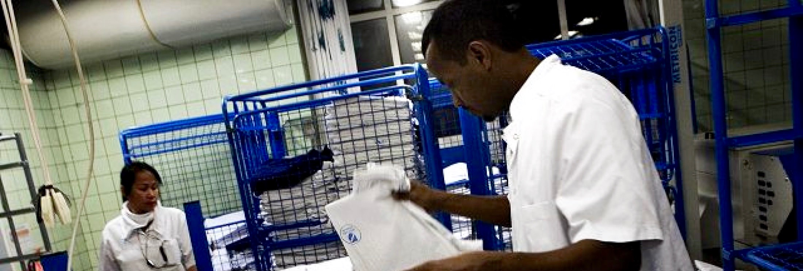
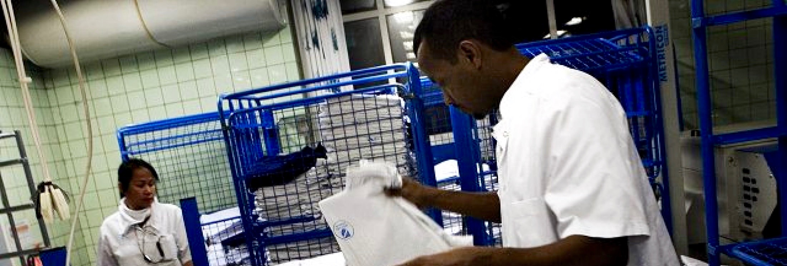

Midtvask søger jævnligt nye medarbejdere til deltidsarbejde
ÅRHUS SYGEHUS, Århus
Arbejdstider
Dagholdmandag, tirsdag, torsdag og fredag: 06:15-14:00
onsdag: 06:15-12:15
mandag, tirsdag og torsdag: 14:00-22:30
onsdag: 12:15-20:45
Søg jobbet
Kunne du tænke dig at arbejde ved midtVask? -så klik på knappen her og udfyld samtaleformlularen.
Om jobbet
midtVask er Danmarks største vaskeri. Vi servicerer alle sygehusene i det gamle Århus Amt og vasker årligt ca. 5.400.000 linned, svarende til 21.000 kg daglig. midtVask har gennem en årrække indtaget positionen som Danmarks mest effektive sygehusvaskeri, i kraft af ny teknologi, styringssystemer og ikke mindst p.g.a. en engageret og dygtig medarbejderstyrke.
Som medarbejder på midtVask skal du være god til at samarbejde, da vi mange steder arbejder i teams. De fleste teams er selvfungerende, så det er afgørende, at du tør tage ansvar for dit arbejdsområde og for dine kollegaer.
Ligeledes er det vigtigt, at du har en positiv tilgang til effektivisering, udvikling og nytænkning. Endvidere lægger vi vægt på gode danskkundskaber. Vi er ca. 150 ansatte, hvoraf ledelsen/administration udgør 8 personer.
I alt er vi ca. 110 fuldtidsansatte og 40 deltidsansatte. Vi har en kønsfordeling p√• ca. 50/50, vi har en aldersspredning fra 18 til 62 √•r, vi har kolleger fra 20 forskellige nationaliteter, vi har 14 venstreh√•ndede, vi har‚Ķ üôÇ P√• midtVask er vi meget forskellige, vi anser hver is√¶r hinanden for at v√¶re unikke og vi arbejder bevidst for at udvikle os til at blive et meget mangfoldigt vaskeri.
Vi tror på at mangfoldighed er med til at skabe dynamik og udvikling. For at det kan lade sig gøre, har vi i fællesskab fundet frem til det, som vi skal være fælles om, nemlig vores 5 værdier: Samarbejde, Effektivitet, Ansvar, Prøv noget nyt, Anerkendelse (som vist på billedet til venstre).
For yderligere information kontakt venligst vagthavende produktionsleder på 30 70 94 54
Med venlig hilsen
midtVask